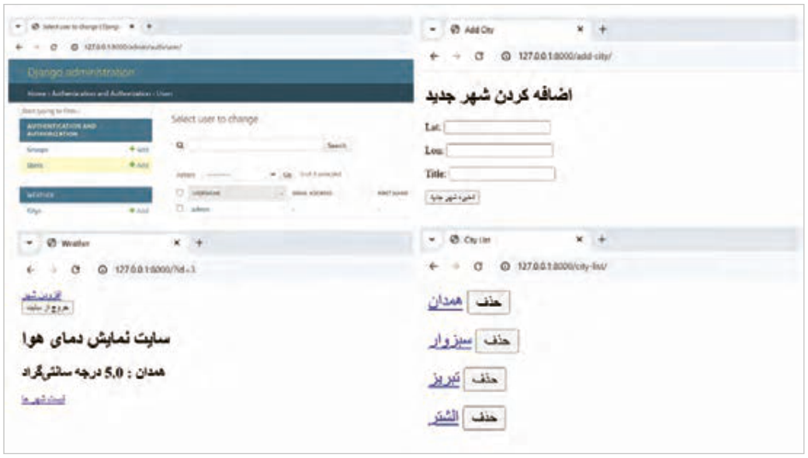
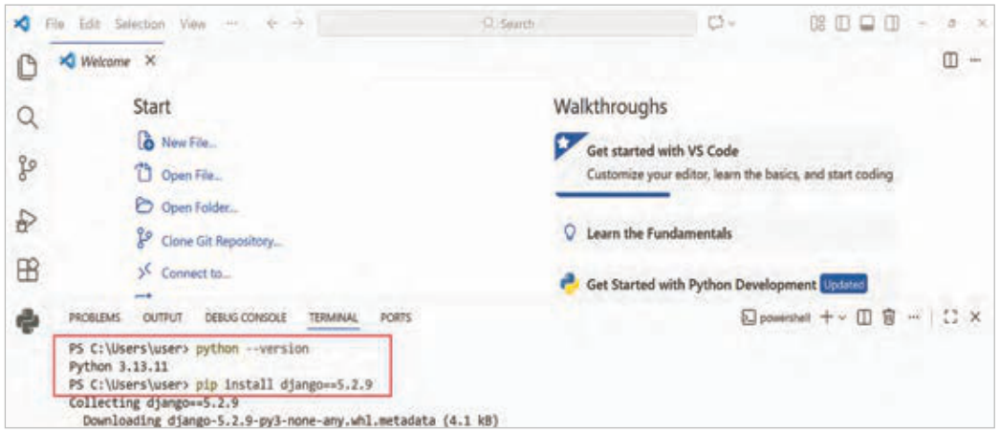
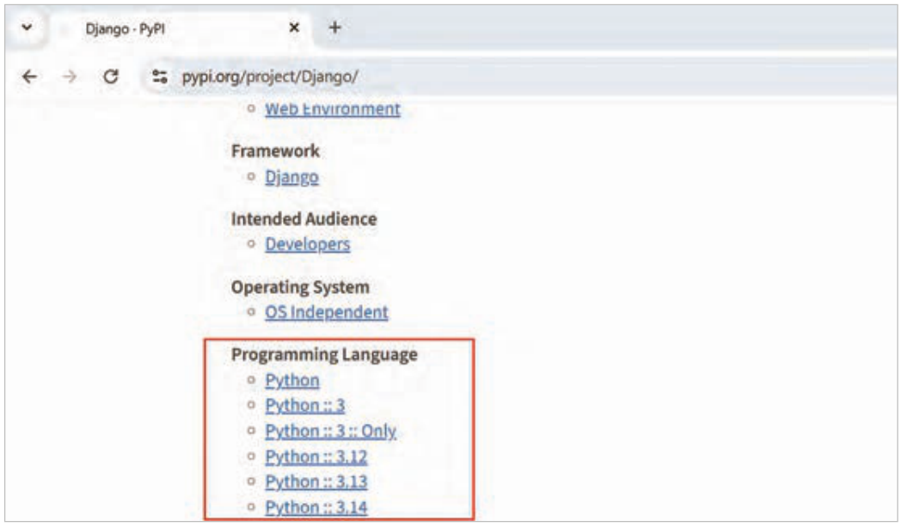

روند کار جنگو، جهت تعامل با کاربر را درک کرده و درباره آن استدلال نماید.
مفهوم url، view و template در جنگو را درک کند.
هنرجو بتواند بهصورت عملی یک وب اپلیکیشن ساده را پیادهسازی کند.
استاندارد عملکرد
هنرجو باید با درک صحیحی که از ساختار جنگو کسب کرده است، بتواند یک وب اپلیکیشن ساده را در رایانه خود پیادهسازی کند.
صفحه ۲۷۷
جنگو چیست؟
جنگو (Django) یک framework منبعباز (open source) است که با زبان برنامهنویسی Python نوشته و برای ساخت و پیادهسازی بخش backend وبسایتها (Website) و وب اپلیکیشنها (Web Application) استفاده میشود.
جدول ۱: مقایسه وبسایت و وب اپلیکیشن
معیار
وبسایت (Website)
وب اپلیکیشن (Web Application)
هدف اصلی
اطلاعرسانی و نمایش محتوا
انجام عملیات و پردازش داده
تعامل کاربر
کم یا تقریباً یکطرفه
زیاد و دوطرفه
نیاز به لاگین
معمولاً ندارد
معمولاً دارد
پردازش سمت سرور
کم
زیاد
وابستگی به backend
کم یا متوسط
بسیار زیاد
تغییر محتوا توسط کاربر
معمولاً ندارد
دارد
مثالها
سایت خبری، سایت شرکتی، بلاگ
پنل کاربری، فروشگاه آنلاین، سامانه آموزشی
مزایای جنگو
جنگو یک framework امن و سریع است که قابلیتهای آمادۀ زیادی را در اختیار برنامهنویس قرار میدهد. به همین دلیل، سرعت توسعۀ نرمافزار در جنگو بسیار بالاست.
در پروژههای جنگو، با افزایش تعداد کاربران نیز میتوان تنها با اعمال تغییراتی اندک، همچنان یک وبسایت سریع و امن داشت.
یکی دیگر از مزایای جنگو، وجود مستندات (راهنمای) جامع و همچنین یک جامعۀ بزرگ و فعال از برنامهنویسان است. این یعنی اگر هنگام کار با جنگو با مشکلی مواجه شوید، با یک جستوجوی ساده در اینترنت میتوانید راهحلها و توضیحات زیادی از سوی برنامهنویسان دیگر پیدا کنید. از دیگر مزیتهای مهم جنگو، وجود فرصتهای شغلی فراوان در حوزۀ پایتون و framework جنگو است که آن را به گزینهای مناسب برای یادگیری و ورود به بازار کار تبدیل میکند. شرکتهای بزرگی در دنیا و ایران از جنگو استفاده کردهاند.
شکل ۱: شرکتهایی که از جنگو استفاده کردهاند
صفحه ۲۷۸
پروژه نهایی این کتاب
در پایان این کتاب، با استفاده از جنگو یک وب اپلیکیشن واقعی نمایش وضعیت آبوهوا طراحی خواهد شد (شکل 2).
در این پروژه کاربر میتواند نام یک شهر را جهت نمایش وضعیت آبوهوا انتخاب و مشاهده نماید.
این وب اپلیکیشن اطلاعات آبوهوا را بهصورت آنلاین دریافت کرده و نتیجه را بهصورت لحظهای نمایش میدهد.
پروژه به شما کمک میکند یاد بگیرید جنگو در عمل چگونه کار میکند و یک وبسایت چگونه ساخته میشود.

شکل ۲: بخشهایی از پروژه نهایی
نصب جنگو
ابتدا مطمئن شوید آخرین نسخه پایتون روی رایانه شما نصب باشد و رایانه به اینترنت متصل باشد. برای این کار وارد برنامه Vscode شده اگر از قبل فایل یا پوشهای باز بود با دستور Close Folder از منوی File آن را ببندید سپس از منوی terminal، یک ترمینال جدید باز کنید.
در ادامه همانند شکل 3 درون قسمت ترمینال دستورات را بهترتیب اجرا نمایید.
صفحه ۲۷۹

شکل ۳: نصب جنگو نسخه 5.2.9
نمایش پیام Successfully installed Django-5.2.9 نشاندهنده نصب موفقیتآمیز جنگو است.
درصورتیکه پیغام نصب موفقیتآمیز جنگو را مشاهده نکردید، از هنرآموز خود راهنمایی بگیرید.
میتوانید آخرین نسخه منتشر شده جنگو را هم نصب کنید، فقط باید در سایت pypi.org و صفحه جنگو، نسخه پایتون سازگار را بهدست آورید.
وارد آدرس https://pypi.org/project/Django شوید و در بخش Programming Language نسخههای پایتون پشتیبانی شده جنگو را مشاهده کنید (شکل 4).

شکل ۴: نسخههای پایتون مناسب برای جنگو
Page 276
Learning unit 1
Have you ever thought about this
What are the differences between a website and a web application?
How can you build a web application?
How does a web application interact with the user?
By the end, the student is expected to
Get to know the advantages of Django.
Understand the structure of a Django project.
Understand and reason about how Django works to interact with the user.
Understand the concepts of url, view and template in Django.
The student can practically implement a simple web application.
Performance standard
With the correct understanding the student has gained of the structure of Django, they must be able to implement a simple web application on their own computer.
Page 277
What is Django?
Django is an open-source framework written in the Python programming language and used to build and implement the backend part of websites and web applications.
Table 1: Comparing a website and a web application
Criterion
Website
Web Application
Main purpose
Informing and showing content
Doing operations and processing data
User interaction
Little or almost one-way
A lot and two-way
Need to log in
Usually not
Usually yes
Server-side processing
Little
A lot
Dependence on the backend
Little or medium
Very much
Content change by the user
Usually not
Yes
Examples
A news site, a company site, a blog
A user panel, an online shop, an educational system
The advantages of Django
Django is a safe and fast framework that gives the programmer many ready-made capabilities. For this reason the speed of software development in Django is very high.
In Django projects, even as the number of users grows, with only a few changes you can still have a fast and safe website.
Another advantage of Django is the existence of comprehensive documentation (guides) and also a big and active community of programmers. This means that if you meet a problem while working with Django, with a simple internet search you can find many solutions and explanations from other programmers. Another important advantage of Django is the many job opportunities in the field of Python and the Django framework, which makes it a good choice for learning and entering the job market. Big companies in the world and in Iran have used Django.
Figure 1: Companies that have used Django
Page 278
The final project of this book
At the end of this book, using Django, a real web application showing the weather will be designed (Figure 2).
In this project the user can choose the name of a city to see its weather.
This web application receives the weather information online and shows the result instantly.
The project helps you learn how Django works in practice and how a website is built.
Figure 2: Parts of the final project
Installing Django
First make sure the latest version of Python is installed on your computer and the computer is connected to the internet. For this, open the VSCode program; if a file or folder was already open, close it with the Close Folder command from the File menu, then from the terminal menu open a new terminal.
Next, as in Figure 3, run the commands in the terminal part in order.
Page 279
Figure 3: Installing Django version 5.2.9
The message Successfully installed Django-5.2.9 shows that Django was installed successfully.
If you did not see the message of successful Django installation, ask your teacher for guidance.
You can also install the latest published version of Django; you only need to find the compatible Python version on the site pypi.org and the Django page.
Go to the address https://pypi.org/project/Django and in the Programming Language section see the Python versions supported by Django (Figure 4).